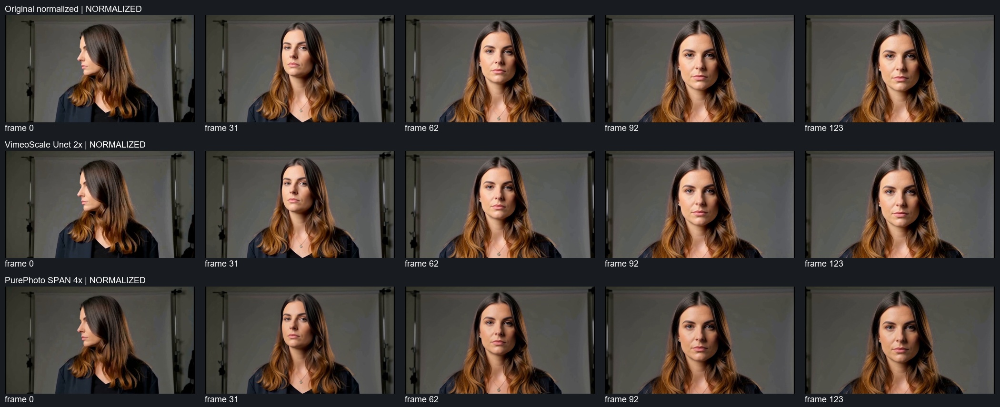

Normal speed first. Compare identity before sharpness. There is no ground truth and no automatic winner. Original, Vimeo and SPAN are available. SPAN is framewise; check temporal stability before judging detail. SDR BT.709 limited is a test assumption.
All available comparison videos: 2560×1440, content 2520×1440 + 20 px left/right, SAR 1, 24 fps. AAC copied from the same original. Vimeo native output remains unchanged; only normalized encode has complete BT.709 tags.
Left Original; middle Vimeo; right SPAN. Panels 1280x720; use full-size players and native crops for detail.

Fixed source coordinates are scaled to each native output. Crops are not resized. The right earring is obscured; only the visible left earring is reviewed.
Strip links cover every chunk transition ±2 frames and clip edges. SPAN has no temporal-model chunk meaning; GameUp was blocked.
0 3 6 9 12 15 18 21 24 27 30 33 36 39 42 45 48 51 54 57 60 63 66 69 72 75 78 81 84 87 90 93 96 99 102 105 108 111 114 117 120 123 123Matching 1:1 normalized geometry, no crop resizing; Original / Vimeo / SPAN.
Red outlines mark actual input overlap bands, not detected artifacts. Navigation overlays are resized; seam PNG crops are native 4x at 1:1.
Tile geometryFrame 0: overlay
Frame 31: overlay
Frame 62: overlay
Frame 92: overlay
Frame 123: overlay
x-blend-1088-1152-span-native4x-frame-0.png
x-blend-1088-1152-span-native4x-frame-123.png
x-blend-1088-1152-span-native4x-frame-31.png
x-blend-1088-1152-span-native4x-frame-62.png
x-blend-1088-1152-span-native4x-frame-92.png
x-blend-224-256-span-native4x-frame-0.png
x-blend-224-256-span-native4x-frame-123.png
x-blend-224-256-span-native4x-frame-31.png
x-blend-224-256-span-native4x-frame-62.png
x-blend-224-256-span-native4x-frame-92.png
x-blend-448-480-span-native4x-frame-0.png
x-blend-448-480-span-native4x-frame-123.png
x-blend-448-480-span-native4x-frame-31.png
x-blend-448-480-span-native4x-frame-62.png
x-blend-448-480-span-native4x-frame-92.png
x-blend-672-704-span-native4x-frame-0.png
x-blend-672-704-span-native4x-frame-123.png
x-blend-672-704-span-native4x-frame-31.png
x-blend-672-704-span-native4x-frame-62.png
x-blend-672-704-span-native4x-frame-92.png
x-blend-896-928-span-native4x-frame-0.png
x-blend-896-928-span-native4x-frame-123.png
x-blend-896-928-span-native4x-frame-31.png
x-blend-896-928-span-native4x-frame-62.png
x-blend-896-928-span-native4x-frame-92.png
y-blend-224-256-span-native4x-frame-0.png
y-blend-224-256-span-native4x-frame-123.png
y-blend-224-256-span-native4x-frame-31.png
y-blend-224-256-span-native4x-frame-62.png
y-blend-224-256-span-native4x-frame-92.png
y-blend-448-480-span-native4x-frame-0.png
y-blend-448-480-span-native4x-frame-123.png
y-blend-448-480-span-native4x-frame-31.png
y-blend-448-480-span-native4x-frame-62.png
y-blend-448-480-span-native4x-frame-92.png
y-blend-512-704-span-native4x-frame-0.png
y-blend-512-704-span-native4x-frame-123.png
y-blend-512-704-span-native4x-frame-31.png
y-blend-512-704-span-native4x-frame-62.png
y-blend-512-704-span-native4x-frame-92.png
Identity: eyes, brows, nose, lips, jaw, hairline, visible ear/earring, pendant. Temporal: flicker, crawling, shimmer, edge wobble, texture boiling, eye mutation, hair/jewelry/background instability. Detail: useful edges versus halos, ringing, invented lashes/pores/hair, plastic skin, sharpening and smearing. A sharper face that changes the person is a negative.
Licenses: Vimeo and SPAN CC-BY-SA-4.0; GameUp CC-BY-NC-SA-4.0 (noncommercial restriction).